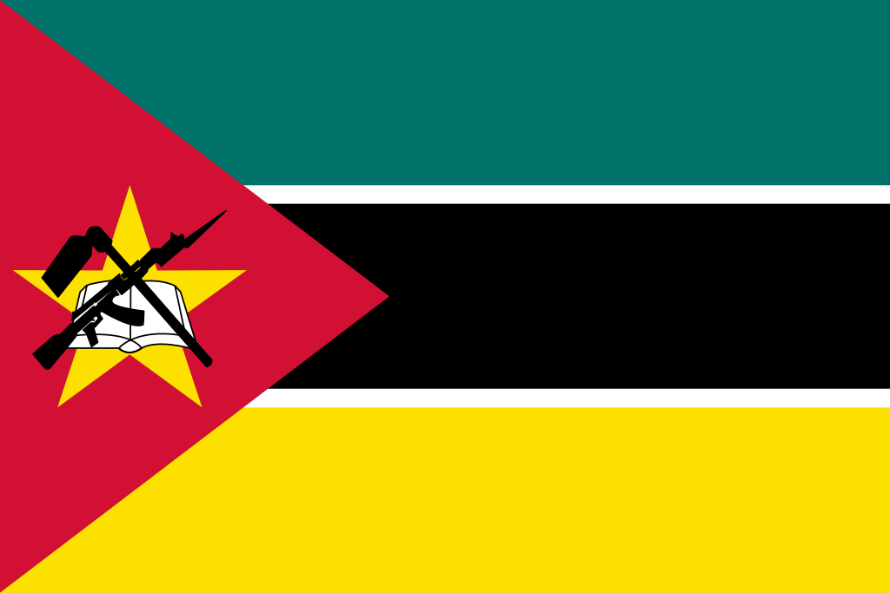

Moçambique
 Moçambique, oficialmente República de Moçambique, é um país localizado no sudeste da África, com costa no Oceano Índico e fronteiras com Tanzânia, Malawi, Zâmbia, Zimbábue, Suazilândia e África do Sul. Com uma área de aproximadamente 801 mil km², sua capital é Maputo, localizada no sul do país. Moçambique possui uma população diversa, formada por numerosos grupos étnicos, incluindo os macuas, tsongas, makondes e outros povos africanos. A língua oficial é o português, mas diversas línguas indígenas também são faladas. Historicamente, o país foi influenciado por comerciantes árabes, exploradores europeus e pelo colonialismo português, tornando-se independente em 1975. Hoje, Moçambique é membro da ONU, União Africana e Comunidade de Países de Língua Portuguesa (CPLP), com economia baseada em agricultura, mineração, pesca e recursos naturais, como gás natural.
História
A história de Moçambique é marcada por migrações de povos africanos e pela presença de comerciantes árabes na costa antes da chegada dos europeus. No século XVI, os portugueses estabeleceram feitorias e colônias, iniciando o processo de colonização que duraria até 1975. Durante o período colonial, o país foi explorado economicamente, com agricultura de exportação, mineração e trabalhos forçados. Resistência local ocorreu em várias regiões, mas a independência só foi conquistada após a Guerra de Libertação Nacional, liderada pela Frente de Libertação de Moçambique (FRELIMO).
Após a independência, Moçambique enfrentou uma guerra civil entre 1977 e 1992, envolvendo a FRELIMO e a Resistência Nacional Moçambicana (RENAMO). A assinatura do Acordo Geral de Paz em 1992 marcou o fim do conflito, permitindo a estabilização política e o início do desenvolvimento econômico. Desde então, Moçambique tem buscado crescer de forma sustentável, investindo em infraestrutura, educação e exploração de recursos naturais.
Cultura
A cultura moçambicana é extremamente diversa, resultado da fusão de tradições africanas, árabes e portuguesas. A música e a dança são elementos centrais da expressão cultural, com destaque para estilos como marrabenta, tufo e timbila. O artesanato local, incluindo esculturas em madeira, cerâmica e tecidos, reflete a riqueza cultural do país. A gastronomia combina produtos do mar, como peixes e camarões, com milho, mandioca, amendoim e temperos locais.
As festas tradicionais, rituais e celebrações religiosas fazem parte do cotidiano das comunidades, com influência do cristianismo, islã e crenças indígenas. O português é a língua oficial, mas línguas locais como macua, sena, tsonga e ndau também são amplamente utilizadas, especialmente no meio rural. A literatura e as artes visuais destacam escritores e artistas que retratam a história, as tradições e as transformações sociais do país.


Clima
Moçambique apresenta clima tropical ao longo da costa, com temperaturas elevadas e chuvas concentradas no verão, e clima semiárido no interior norte e sul. As regiões costeiras são influenciadas pelo Oceano Índico, resultando em alta umidade e ciclones ocasionais. O clima impacta diretamente a agricultura, a pesca e o modo de vida das populações, exigindo adaptações ao longo das diferentes regiões do país.
Biodiversidade
Moçambique possui biodiversidade rica e diversificada, incluindo florestas tropicais, savanas, manguezais e recifes de coral. A fauna inclui elefantes, leões, hipopótamos, crocodilos e numerosas espécies de aves e peixes. Áreas protegidas, como o Parque Nacional da Gorongosa e o Parque Nacional de Niassa, são fundamentais para a conservação de espécies ameaçadas e ecossistemas únicos.


Cidades
As cidades de Moçambique combinam centros administrativos, históricos e comerciais em meio a um território predominantemente rural. Maputo, a capital, é o principal centro político, econômico e cultural, com porto estratégico e infraestrutura urbana moderna. Beira, na costa central, é outro centro importante, com atividades portuárias e comerciais. Outras cidades significativas incluem Nampula, Chimoio e Pemba, cada uma refletindo adaptações ao clima tropical e à diversidade cultural local. As cidades desempenham papel central na economia, educação e serviços, funcionando como polos de desenvolvimento e integração regional.